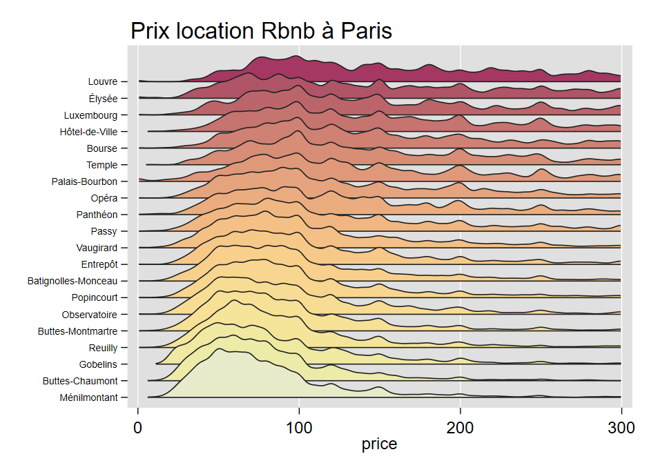

net install gridge, from("https://mthevenin.github.io/stata_graphiques/ressources/gridge/") replacegridge
Depuis 2020, des programmes permettent de générer de type lignes de crête: joyplot (A.Naqvi) et joy_plot (F.Rios-Avila).

La première commande, malgré une maj récente, présente toujours des problèmes concernant le report des informations sur l’axe discret pour la version joyplot y.
A partir d’un programme écrit à l’automne 2020, et en restant au plus près de la fonction ggridge de R, j’ai également programmé une commande. Elle permet, entre autres, de paramétrer le tri les modalités de l’axe discret à partir d’une fonction autorisée avec egen (mean, median, sd….), de choisir librement un intervalle sur l’axe des abcisses pour éviter le report de valeurs sortant de borne acceptables (probabilité négatives ou supérieure à 1 par exemple). Comme on estime des densités, le nombre d’observations minimales a été fixé à 10. Si ce critère n’est pas respecté, les valeurs de y qui ne respectent pas cette contrainte sont affichées.
Des améliorations restent néanmoins à prévoir.
Installation
Syntaxe
syntax variable [if], ///
over(variable) super(numeric 1.8) ///
sort(string) sortrev(string) bw(real>0 1.5) ///
palette(string) colrev opac(integer 80) lc(integer 2)] lw(real .5)] gopts(string)] ///
range(value1 value2) Entre parenthèse le type d’argument, suivi si nécessaire de la valeur par défaut.
Arguments
over(variable): variable de stratification. De type numérique avec ou non un labelsuper(numeric 1.8): degré de superposition des densités. Positif de préférence.sort(string): mean, median, sd, iqr, mode (ou autre fonction statistique compatible avecegen)sortrev(string)-sortr(string): idem mais les valeurs de la variableover()seront affichées en ordre décroissantbw(real>0 1.5): largeur de la fenêtre de lissage.palette(string)pal(string): nom d’une palette du packagecolorpalette. Ce dernier sera installé comme dépendance si nécessaire. L’ordre des couleurs sera inversé par rapport à palette sélectionnée.colrev: permet d’inverser l’ordre des couleurs de la palette. Permet de retrouvet l’ordre de la palette d’origine decolorpaletteopac(integer 80): % d’opacité des couleurs. Valeur max = 100range(value1 value2): permet de borner les valeurs de l’axe continu (x). value1 \(<\) value2lc(integer 2): échelle de gris du contour des densités (palette gs). Valeurs comprise entre 1 (noir) et 15 (blanc)lw(real .5): épaisseur du contour des densités en valeur relative. Valeur minimum 0gopts(string): autres options des graphique de typetw: titre, xlabel, plotr, graphr…. Ne pas utiliser l’optionylabel(option spécifique à venir).
Remarques
- Pour la variable de l’argument
over(), chaque valeur doivent avoir au moins 10 observations. Si ce n’est pas le cas, la commande n’exécutera pas le graphique mais affichera les valeurs dont le nombre d’observation est insuffisant. - Toujours pour la variable de l’argument
over(), j’ai pour l’instant limité le format de la variable à un format numérique, avec ou sans labels affectés aux valeurs. - Ce type de visualisation est également utilisée pour représenter comparer l’évolution dans le temps d’une variable quantitative, par exemple entre pays (très à la mode avec le COVID)exemple. Cela permet d’offrir un certain contrôle des effets dits “spaghetti”, mais je préfère dans ce cadre les approches de type small-multiple. Par ailleurs, dans l’esprit des courbes de Ridge, l’axe Y est plutôt de type ordonné. Cette option est offerte dans la fonction
joyplot(A.Navqui).
{kind=link}
Exemple 1
Ouverture de la base
webuse set "https://raw.githubusercontent.com//mthevenin/stata_graphiques/master/ressources/gridge"
webuse "probability.dta", clear
webuse setGraphique
#delimit;
gridge p , over(proba)
range(0 100) bw(2)
palette(flare) op(90)
gopts(title("Probabilités assignées", pos(11))
caption("Source: Reddit", size(*.5))
xtitle("probabilités (%)"))
;
Exemple 2
Dans le premier exemple, les modalités de l’axe discret était ordonnée. Avec cet exemple, Le premier graphique représente la série de distributions suivant l’ordre des valeurs par défaut de la variable zône. Le second graphique avec l’option sort(median) trie de manière croissante les secteurs selon la valeur médiane du prix de la location, enfin le troisième applique un tri décroissant avec l’option sortrev(median).
Ouverture de la base
webuse set https://github.com/mthevenin/stata_graphiques/tree/main/bases
use rbnb_paris, replace
webuse setGraphique 1
gridge price if price<=300, over(zone) bw(4) gopts(title("Prix location Rbnb à Paris", pos(11))) range(0 300)Graphique 2
#delimit ;
gridge price,
over(zone) super(2) palette(HCL heat2) bw(4) lc(2) lw(.8) sort(mean)
gopts(title("Prix location Rbnb à Paris", pos(11))) range(0 300) op(100)
;
Graphique 3
#delimit ;
gridge price,
over(zone) super(2) palette(HCL heat2) bw(4) lc(2) lw(.8) sortrev(mean) colrev
gopts(title("Prix location Rbnb à Paris", pos(11)))
;
Nombre d’observations insuffisantes pour estimer les densités
Le seuil à été fixé à 10 observations. Si ce n’est pas le cas, le graphique n’est pas exécuté mais les informations sur les valeurs de y qui manquent d’informations sont indiquées
webuse nhanes2, clear
gen bmi2 = round(bmi)
gridge bpsystol, over(bmi2)
/*
bmi2=12: nombre d'observations insuffisant pour estimer les densités
bmi2=14: nombre d'observations insuffisant pour estimer les densités
bmi2=15: nombre d'observations insuffisant pour estimer les densités
bmi2=46: nombre d'observations insuffisant pour estimer les densités
bmi2=47: nombre d'observations insuffisant pour estimer les densités
bmi2=48: nombre d'observations insuffisant pour estimer les densités
bmi2=49: nombre d'observations insuffisant pour estimer les densités
bmi2=51: nombre d'observations insuffisant pour estimer les densités
bmi2=52: nombre d'observations insuffisant pour estimer les densités
bmi2=53: nombre d'observations insuffisant pour estimer les densités
bmi2=54: nombre d'observations insuffisant pour estimer les densités
bmi2=55: nombre d'observations insuffisant pour estimer les densités
bmi2=57: nombre d'observations insuffisant pour estimer les densités
bmi2=61: nombre d'observations insuffisant pour estimer les densités
Exit: nombre d'observations minimum = 10
*/